RENTA DE
PODIUM PROFESIONAL
Podiums y atriles elegantes para conferencias, presentaciones corporativas, ceremonias académicas y eventos oficiales en CDMX y Estado de México
¿Buscas un podium profesional que proyecte autoridad, elegancia y credibilidad en tu conferencia o ceremonia? La renta de podiums de RESOIL ofrece soluciones premium desde modelos ejecutivos de madera hasta podiums presidenciales con sonido integrado, diseñados para potenciar tu presencia en eventos corporativos, académicos y oficiales. Eliminamos la preocupación de equipamiento inadecuado con atriles profesionales que combinan funcionalidad, diseño y tecnología en CDMX y Estado de México.
Nuestros podiums profesionales van más allá del simple atril: son plataformas de comunicación estratégica que refuerzan tu mensaje con presencia física y equipamiento técnico impecable. Desde podiums acrílicos minimalistas para presentaciones tech hasta modelos presidenciales de madera con microfonía integrada, cada instalación de RESOIL está calibrada para proyectar profesionalismo absoluto. Con nuestros podiums para eventos, transformas cada discurso en una experiencia memorable y cada presentación en un momento de impacto.
Galería de Podiums en Eventos Realizados
Instalaciones profesionales de podiums que elevan conferencias, ceremonias y presentaciones en CDMX y Estado de México
 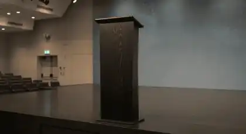
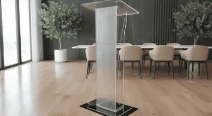
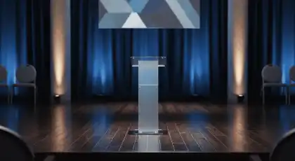
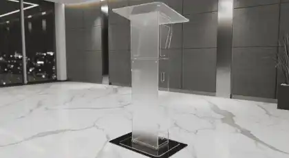
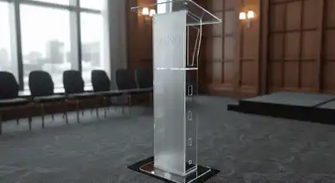
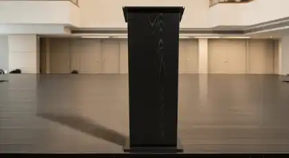
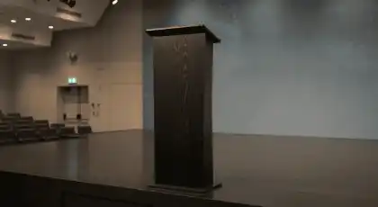
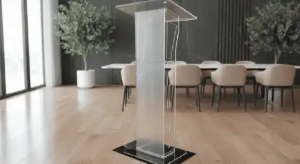
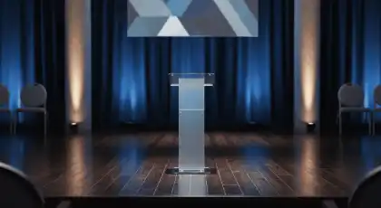
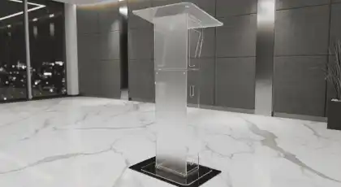
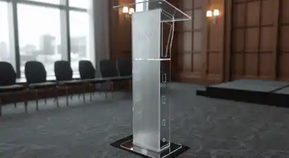
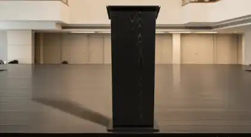
Estas imágenes muestran algunos de nuestros eventos exitosos con podiums profesionales para conferencias, ceremonias y presentaciones en CDMX y Estado de México. Cada instalación refleja nuestro compromiso con la excelencia y el diseño profesional que caracteriza a RESOIL.
Por Qué la Renta de Podium Profesional Es la Decisión Correcta para Tu Evento
En eventos donde la comunicación es crítica, la diferencia entre una presentación que cautiva y una que se olvida está en los detalles profesionales. Un podium de calidad no es solo un mueble: es una herramienta estratégica que proyecta autoridad, organiza tu discurso y refuerza tu credibilidad visual. En RESOIL, entendemos que cada presentación, conferencia o ceremonia requiere el podium perfecto, y nuestro servicio de renta está diseñado para eliminar improvisaciones y maximizar impacto profesional.
¿Por qué los mejores event planners corporativos, universidades prestigiosas y organizaciones oficiales en CDMX y Estado de México eligen RESOIL? Porque ofrecemos más que atriles: entregamos soluciones completas de comunicación escénica con equipamiento premium. Nuestro equipo profesional maneja todo el proceso, desde selección del modelo ideal hasta instalación perfecta en tu venue, permitiéndote concentrarte en tu mensaje mientras nosotros optimizamos tu presencia.
Aplicaciones Estratégicas: Dónde Nuestros Podiums Marcan la Diferencia
Eventos y Escenarios Donde el Podium Es Esencial
Conferencias Corporativas
Podiums ejecutivos y presidenciales que proyectan liderazgo durante keynotes, presentaciones de resultados y anuncios estratégicos. Modelos con microfonía integrada que garantizan audio perfecto, superficie para laptop/tablet y diseño que refuerza tu marca corporativa. Ideal para CEO's, directores y voceros oficiales.
Ceremonias Académicas
Podiums de madera elegantes para graduaciones, ceremonias de premiación y eventos protocolarios universitarios. Diseños clásicos que transmiten solemnidad y tradición académica. Altura perfecta para discursos de rectores, autoridades y oradores distinguidos. Opciones con escudos institucionales personalizados.
Presentaciones de Productos
Podiums acrílicos minimalistas que no compiten visualmente con tu producto lanzamiento. Diseño transparente que permite iluminación LED integrada y crea efecto moderno y tech. Perfecto para presentaciones de startups, demos de tecnología y eventos de innovación donde el protagonismo es tu producto.
Conferencias de Prensa
Podiums con personalización corporativa express (logos, branding) para ruedas de prensa, anuncios oficiales y declaraciones institucionales. Modelos robustos que soportan múltiples micrófonos de medios, cableado ordenado y proyectan profesionalismo absoluto ante cámaras y periodistas.
Discursos y Ceremonias Oficiales
Podiums presidenciales de lujo con acabados premium para eventos gubernamentales, ceremonias diplomáticas y actos protocolarios. Diseños que transmiten autoridad institucional, con opciones de grabado de escudos nacionales, banderas integradas y sonorización profesional incorporada.
Paneles de Discusión y Moderación
Podiums compactos y atriles de moderador para paneles, mesas redondas y debates profesionales. Diseños ligeros que facilitan visibilidad entre panelistas, con espacio para notas, laptop y control de tiempos. Compatible con sistemas de audio para múltiples participantes y moderación dinámica.
La versatilidad de nuestros podiums profesionales los convierte en la solución perfecta para cualquier tipo de evento formal. Desde conferencias tech hasta ceremonias tradicionales, nuestros modelos se adaptan a cualquier escenografía y requerimiento protocolar.
Paquetes de Renta de Podium: Soluciones para Cada Tipo de Evento
RESOIL ofrece 5 categorías de podiums profesionales, desde modelos básicos hasta podiums presidenciales premium con tecnología integrada. Cada paquete incluye entrega, instalación profesional, personalización disponible y desmontaje. Las especificaciones técnicas se traducen directamente en presencia escénica y funcionalidad profesional.
| Modelo | Material | Dimensiones | Características | Ideal Para | Precio Ref./Día |
|---|---|---|---|---|---|
| Básico | MDF barnizado | 120cm alto x 60cm ancho | Superficie para notas, atril inclinado, base estable | Eventos internos, presentaciones simples, ceremonias económicas | $800-1,200 MXN |
| Ejecutivo | Madera barnizada (nogal/caoba) | 115cm alto x 65cm ancho x 50cm prof. | Acabado premium, compartimento interno, cable management, portavasos | Conferencias corporativas, ceremonias académicas, eventos formales | $2,500-3,500 MXN |
| Acrílico Transparente | Acrílico cristal 12mm | 110cm alto x 50cm ancho | Diseño minimalista, transparencia total, iluminación LED integrada opcional | Presentaciones tech, lanzamientos de producto, eventos modernos | $3,800-5,200 MXN |
| Presidencial | Madera noble + herrajes metálicos | 120cm alto x 70cm ancho x 55cm prof. | Micrófono de cuello integrado, sistema de audio, personalización de logo, acabados de lujo | Conferencias de prensa, ceremonias oficiales, discursos institucionales | $6,500-8,500 MXN |
| Premium Multimedia | Materiales combinados + tecnología | 125cm alto x 75cm ancho x 60cm prof. | Pantalla táctil integrada, sonido profesional, conectividad HDMI/USB, iluminación LED, personalización total | Eventos corporativos high-end, presentaciones tech, lanzamientos premium | $12,000-15,000 MXN |
Especificaciones Técnicas y Servicios Incluidos (Todos los Modelos)
- ✓ Entrega e Instalación: Transporte en vehículo especializado + montaje profesional en tu venue
- ✓ Ajuste de Altura: Modelos con altura ajustable 90-130cm para adaptarse a cualquier orador
- ✓ Superficie de Trabajo: Espacio ergonómico para laptop (13"-15"), notas, tablet y accesorios
- ✓ Gestión de Cables: Canales integrados para cableado ordenado de audio, video y alimentación
- ✓ Personalización Express: Vinilo adhesivo con logo corporativo (24-48hrs) sin costo adicional en paquetes Premium
- ✓ Microfonía Integrada: Modelos Presidencial y Premium incluyen micrófono de cuello de ganso profesional
- ✓ Iluminación LED: Opciones de iluminación ambiental sincronizada con identidad corporativa (modelos Acrílico y Premium)
- ✓ Garantía Total: Seguro de daños incluido + equipo de respaldo disponible para eventos críticos
Solicita tu Cotización de Renta de Podium
Completa el formulario con los detalles de tu evento y recibe una cotización personalizada al instante vía WhatsApp. Nuestro equipo te responderá en menos de 2 horas con recomendaciones profesionales.
Preguntas Frecuentes sobre Renta de Podium Profesional
Resuelve todas tus dudas sobre nuestro servicio especializado de alquiler de podiums y atriles
Ofrecemos 5 categorías principales adaptadas a diferentes necesidades y presupuestos:
Podium Básico: Construcción en MDF barnizado, funcional y económico. Ideal para eventos internos y presentaciones simples. Precio: $800-1,200 MXN/día.
Podium Ejecutivo: Madera barnizada premium (nogal, caoba, roble) con acabados profesionales, compartimento interno y cable management. Ideal para conferencias corporativas. Precio: $2,500-3,500 MXN/día.
Podium Acrílico Transparente: Diseño moderno minimalista en acrílico cristal de 12mm, con opción de iluminación LED integrada. Perfecto para presentaciones tech y lanzamientos. Precio: $3,800-5,200 MXN/día.
Podium Presidencial: Madera noble con herrajes metálicos, micrófono de cuello integrado, sistema de audio y personalización de logo. Para ceremonias oficiales y conferencias de prensa. Precio: $6,500-8,500 MXN/día.
Podium Premium Multimedia: Tecnología avanzada con pantalla táctil, sonido profesional, conectividad completa e iluminación LED. Para eventos corporativos high-end. Precio: $12,000-15,000 MXN/día.
Todos los modelos incluyen entrega, instalación profesional y desmontaje. Descuentos disponibles para rentas de 2+ días.
Depende del modelo seleccionado:
Modelos Presidencial y Premium Multimedia: SÍ incluyen micrófono de cuello de ganso profesional integrado con sistema de amplificación. El micrófono se conecta directamente al sistema de audio del evento mediante XLR o salida de línea. Marcas profesionales como Shure o Audio-Technica.
Modelos Básico, Ejecutivo y Acrílico: NO incluyen sonido integrado por defecto, pero se pueden complementar con:
- Micrófonos inalámbricos de solapa/diadema (adicionales por $800-1,500/día)
- Micrófonos de mano inalámbricos premium ($600-1,200/día)
- Paquetes completos de conferencia con audio profesional
Recomendación: Para eventos con 100+ asistentes, siempre sugerimos modelos con microfonía integrada o complementar con nuestros sistemas de audio profesional para garantizar cobertura perfecta.
La altura ideal del podium depende de tres factores: estatura del orador, tipo de escenario y visibilidad de audiencia.
Altura Estándar 110-120cm: Ideal para oradores de 1.65m-1.85m en escenarios a nivel de piso. La altura más común y versátil para conferencias generales.
Altura Ajustable 90-130cm: Perfecta cuando hay múltiples oradores de diferentes estaturas. Permite ajuste rápido entre presentadores sin cambio de equipo. Recomendada para paneles y graduaciones.
Podium de Escritorio 70-80cm: Diseñado para colocarse sobre mesas, escenarios elevados o tarimas. Ideal cuando el orador está sobre plataforma elevada.
Podium Bajo 80-90cm: Específico para oradores sentados, niños/adolescentes en ceremonias escolares o configuraciones especiales.
Podium Alto 120-140cm: Para escenarios bajos donde se necesita mayor presencia visual o cuando la audiencia está en gradas/auditorios con desnivel.
Servicio de Asesoría: Ofrecemos visita técnica gratuita para eventos de 200+ personas donde evaluamos altura óptima según tu venue, escenografía y características de oradores.
Sí, ofrecemos 3 niveles de personalización corporativa:
1. Vinilo Adhesivo Temporal (Más Popular):
- Aplicación sin daño al podium, instalación/remoción en minutos
- Impresión full color de tu logo corporativo en alta resolución
- Tiempo de producción: 24-48 horas desde aprobación de diseño
- Costo: INCLUIDO en paquetes Premium y Corporate / $800-1,200 adicional en otros modelos
- Ideal para: Conferencias corporativas, eventos con branding temporal
2. Placa Acrílica con Logo Grabado:
- Placa acrílica premium con logo grabado láser + montaje magnético
- Acabado elegante y profesional, reutilizable en eventos futuros
- Tiempo de producción: 48-72 horas
- Costo: $2,500-3,500 (la placa queda de tu propiedad)
- Ideal para: Organizaciones con eventos recurrentes, imagen corporativa permanente
3. Impresión Digital Full Color (Podiums Acrílicos):
- Impresión directa sobre acrílico con calidad fotográfica
- Logos, imágenes corporativas o patrocinadores múltiples
- Tiempo de producción: 5-7 días hábiles
- Costo: Desde $4,500 según complejidad de diseño
- Ideal para: Lanzamientos premium, eventos con múltiples sponsors
Proceso: Envías tu logo en formato vectorial (AI, EPS, PDF) o PNG alta resolución → Nuestro equipo crea mockup digital → Apruebas diseño → Producción express → Entrega e instalación.
Sí, todos nuestros paquetes incluyen servicio completo de instalación profesional:
Incluido en Todos los Paquetes:
- Entrega puntual: Llegamos 2-3 horas antes del evento para montaje sin presión
- Transporte especializado: Vehículos equipados con protección para evitar daños durante traslado
- Instalación profesional: Posicionamiento según escenografía, nivelación perfecta en cualquier superficie
- Pruebas técnicas: Verificación de estabilidad, altura, sonido integrado (modelos con audio)
- Gestión de cables: Organización profesional de cableado de audio/video/alimentación
- Ajustes durante evento: Técnico disponible para cambios de altura o reposicionamiento si es necesario
- Desmontaje al finalizar: Retiro rápido y discreto sin interrumpir el cierre de tu evento
Cobertura Geográfica:
- CDMX y zona metropolitana: SIN COSTO ADICIONAL
- Estado de México (Toluca, Cuernavaca, Puebla): Tarifa de traslado desde $800 según distancia
- Eventos fuera de zona metropolitana: Cotización personalizada transparente
Garantía de Puntualidad: Llegamos en el horario acordado o el servicio del día es gratuito (aplican restricciones por causas de fuerza mayor).
Ambos materiales tienen ventajas específicas según el tipo de evento y mensaje que deseas transmitir:
Podium de Madera (Ejecutivo/Presidencial):
- Imagen: Elegancia clásica, tradición, autoridad institucional
- Presencia: Sólida y robusta, proyecta permanencia y seriedad
- Acabados: Nogal, caoba, roble con barniz premium y herrajes metálicos
- Peso: Mayor estabilidad (15-25kg), no se mueve fácilmente
- Sonido: Compartimentos internos ideales para cableado de microfonía integrada
- Ideal para: Ceremonias académicas, eventos gubernamentales, conferencias formales, discursos institucionales, graduaciones
Podium Acrílico Transparente:
- Imagen: Modernidad, transparencia, innovación, minimalismo tech
- Presencia: Ligera y contemporánea, permite ver al orador completo
- Acabados: Cristal transparente de 12mm, bordes pulidos, opciones con LED integrado
- Peso: Más ligero (8-12kg), fácil de mover y reposicionar
- Iluminación: Compatible con iluminación LED RGB interna que crea efectos visuales impactantes
- Ideal para: Presentaciones de startups, lanzamientos de productos tech, eventos de innovación, conferencias modernas, espacios arquitectónicos contemporáneos
Recomendación Profesional: Para eventos corporativos tradicionales, banca, gobierno o academia → Madera. Para tech, startups, diseño, innovación o branding moderno → Acrílico. Para eventos híbridos, considera Podium Presidencial que combina elegancia de madera con tecnología integrada.
El tiempo de anticipación depende del tipo de evento y personalización requerida:
Eventos Corporativos Estándar (sin personalización): Mínimo 1-2 semanas de anticipación. Esto garantiza disponibilidad del modelo específico y coordinación logística con tu venue.
Eventos con Personalización de Marca: Mínimo 2-3 semanas. El proceso de producción de vinilos o placas con logo requiere diseño, aprobación y fabricación (24-72hrs según opción seleccionada).
Conferencias Grandes o Graduaciones: 3-4 semanas recomendadas. Temporada alta (febrero-julio) tiene mayor demanda de podiums presidenciales y ejecutivos. Reserva anticipada garantiza el modelo exacto.
Eventos de Última Hora: Consultamos disponibilidad hasta 48 horas antes del evento (sujeto a inventario). No garantizamos modelos específicos ni personalización, pero hacemos todo lo posible por apoyarte.
Rentas Largas (+3 días): 2-3 semanas mínimo para asegurar disponibilidad continua del equipo.
Proceso de Reserva Exprés:
- Cotización enviada en menos de 2 horas hábiles
- Reserva confirmada con 50% de anticipo
- Saldo final 48 horas antes del evento
- Factura CFDI emitida inmediatamente
Consejo Pro: Para eventos críticos (conferencias de prensa, presentaciones de CEO, ceremonias oficiales), reserva con 4+ semanas de anticipación. Esto permite personalización premium, visita técnica al venue y coordinación perfecta con otros proveedores.
Sí, ofrecemos 4 paquetes integrados que combinan podium con equipamiento profesional completo:
1. Paquete Conferencia Completa:
- Podium Ejecutivo o Presidencial con microfonía
- Sistema de audio profesional (bocinas line array + mezcladora)
- 2-4 micrófonos inalámbricos adicionales para Q&A
- Proyector HD 5,000 lúmenes + pantalla 3x2m
- Precio paquete: Desde $12,000 (vs. $16,500 individual) - Ahorro 27%
2. Paquete Graduación Premium:
- Podium Presidencial con personalización de escudo institucional
- Sistema de sonido ceremonial para 300-800 personas
- Iluminación escénica LED (4-6 unidades)
- Micrófonos inalámbricos para autoridades y oradores
- Precio paquete: Desde $18,500 (vs. $24,000 individual) - Ahorro 23%
3. Paquete Corporativo High-End:
- Podium Premium Multimedia con pantalla táctil
- Pantallas LED 3x2m para presentaciones
- Sistema de sonido premium con subwoofers
- Iluminación arquitectónica LED RGB (8-12 unidades)
- Streaming profesional opcional
- Precio paquete: Desde $35,000 (vs. $45,000 individual) - Ahorro 22%
4. Paquete Panel de Discusión:
- Podium de moderador + 2 atriles compactos para panelistas
- 6 micrófonos inalámbricos profesionales
- Sistema de audio distribuido
- Mesas de panel y sillas ejecutivas
- Precio paquete: Desde $9,500 (vs. $12,500 individual) - Ahorro 24%
Ventajas de Paquetes Integrados:
- Descuentos del 15-27% vs. renta individual de equipos
- Un solo proveedor coordina todo (reduces complejidad logística)
- Equipos compatibles y probados en conjunto previamente
- Instalación sincronizada y optimizada
- Soporte técnico unificado durante el evento
Eleva Tu Presencia con Podiums Profesionales RESOIL
Para Organizadores de Eventos Corporativos: Tu conferencia, presentación o ceremonia merece equipamiento que proyecte la misma profesionalidad que tu mensaje. El podium correcto no es un detalle menor: es la plataforma física que refuerza tu autoridad, organiza tu discurso y transmite credibilidad visual a tu audiencia.
Con RESOIL, no solo rentas un atril: inviertes en presencia escénica profesional. Desde podiums presidenciales con sonido integrado hasta modelos acrílicos minimalistas para presentaciones tech, nuestro inventario premium cubre cualquier necesidad. Instalación perfecta, personalización express y asesoría especializada incluida.
Para Event Planners y Coordinadores: Tu reputación depende de proveedores que entiendan que cada detalle cuenta en eventos de alto perfil. RESOIL es tu aliado estratégico en equipamiento escénico profesional. Operamos con la discreción, puntualidad y excelencia que tus clientes corporativos, instituciones académicas y organizaciones oficiales exigen.
Facturación CFDI inmediata, contratos transparentes, entrega garantizada y servicio impecable. Porque entendemos que en eventos corporativos y ceremonias oficiales, la confianza se construye con resultados consistentes. Más de 2,500 eventos exitosos equipados durante más de 11 años nos respaldan.
Garantía Total: Instalación profesional incluida • Personalización express disponible • Seguro de daños incluido • Modelos premium desde básico hasta presidencial multimedia • Facturación CFDI inmediata